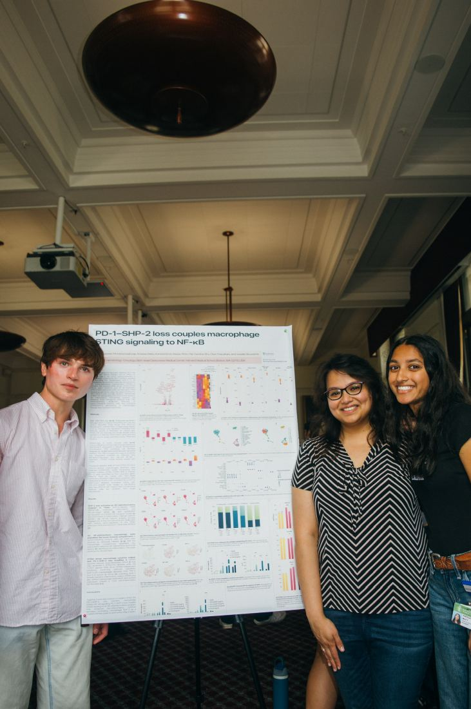
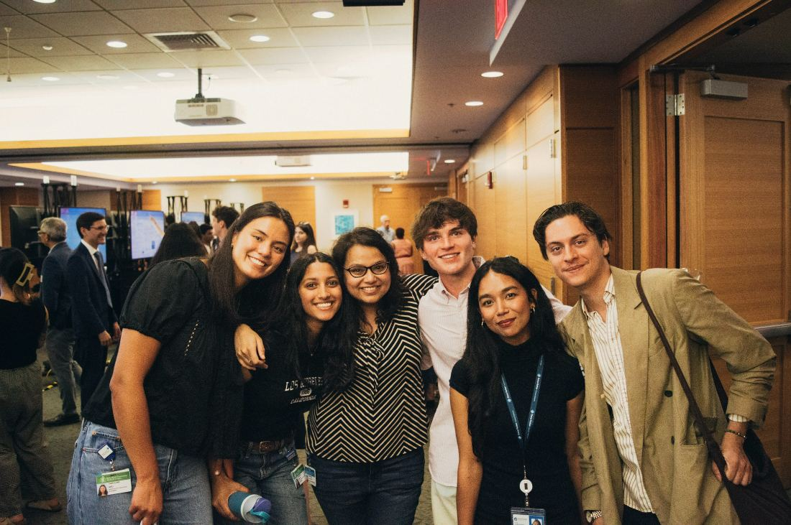
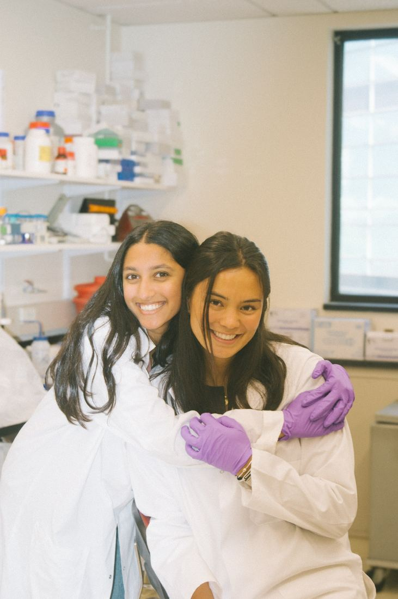
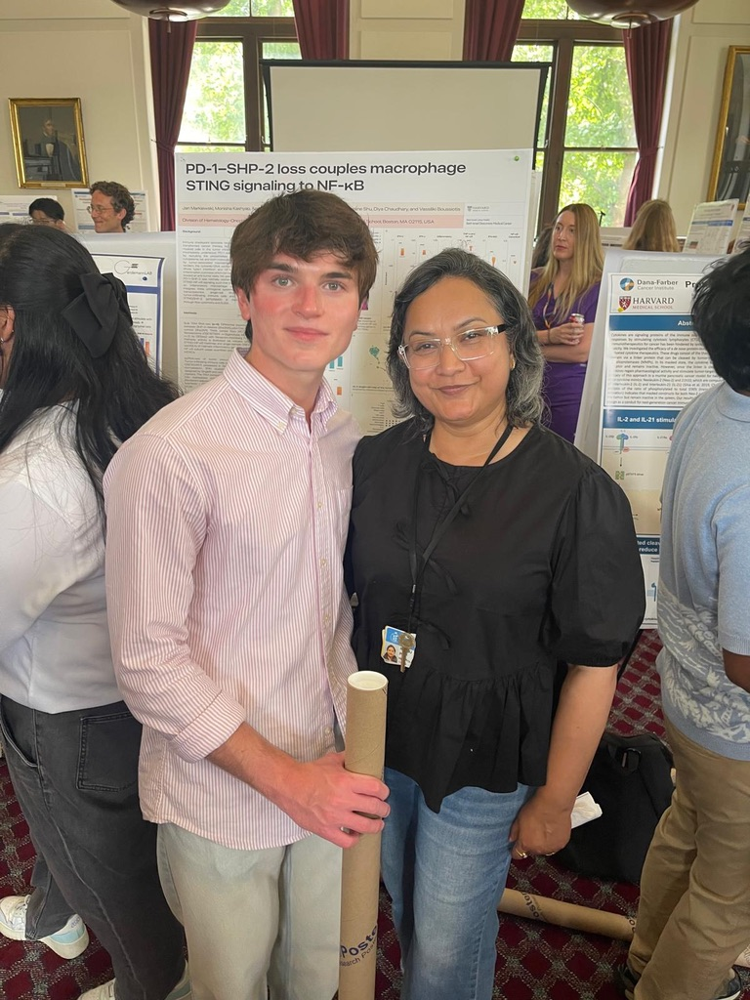
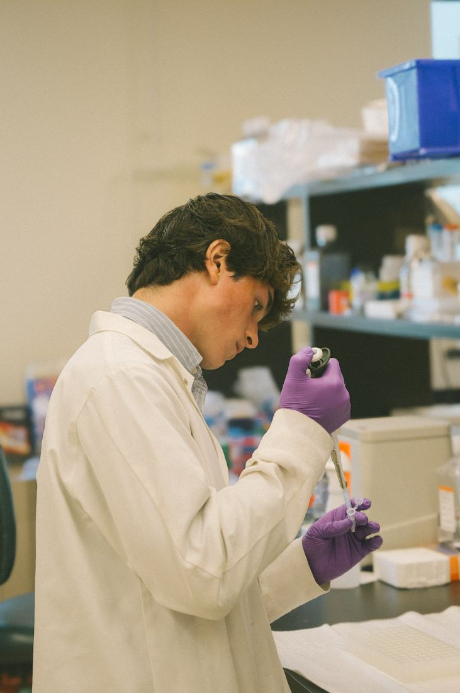

Beth Israel Deaconess Medical CenterHarvard Medical School
Harvard Immunology Undergraduate Summer Program
PD-1 is understood almost entirely as a T-cell checkpoint, but it is also expressed on tumor-associated macrophages, where the phosphatase it recruits sits within reach of the innate DNA-sensing machinery. gene-expression and functional readouts both point to SHP-2 tuning how strongly a macrophage converts cytosolic DNA sensing into inflammatory transcription. that nominates it as a myeloid-intrinsic brake on anti-tumor inflammation, and puts innate immunity in the frame for what checkpoint blockade is doing.
this project came together over 10 weeks through the Harvard Medical School Immunology Undergraduate Summer Program, an internship pairing hands-on bench research with faculty lectures and workshops led by current immunology graduate students. thank you to Monisha Kashyap, Aneesa Maity, Konstantinos Aliazis, Rinku Pal, Caroline Shu, and Diya Chaudhary, and to the lecturers, graduate students, lab technicians, and postdocs who taught along the way, and of course to Dr. Vassiliki Boussiotis for making this opportunity possible!











Beth Israel Deaconess Medical Center06.2024
research student with over 100 cumulative hours for the purpose of learning laboratory techniques and understanding different aspects of immunology and tumor immunology.
engaged in extensive literature search, focusing on tumor-infiltrating macrophages and monocytes, Fms-like tyrosine kinase 3 (FLT3) and FLT3 ligand (FL), cancer defense mechanisms, and FLT3 signaling in leukemia. studied cellular components and signaling pathways in the tumor microenvironment, with a focus on dendritic cells. researched immune system components, peripheral lymphoid organs, lymphocyte trafficking, and flow cytometry applications. additionally, studied the innate and adaptive immune systems, including humoral and cell-mediated immunity, and created detailed notes on T and B lymphocytes, their subtypes, and functions.
completed PCR training, covering primer selection, pipetting techniques, and DNA analysis. assisted in numbering tubes, pipetting buffers, and organizing, weaning, and euthanizing mice. conducted gel electrophoresis, including DNA visualization and PCR products.
assisted with various mice work, including cage organization, mice separation, shaving, sedation, and tail cuts. prepared and helped inject mice, arranged cages, and independently tagged, weaned, fed, and provided water to mice.
documented tumor measurements, assisted in mice euthanasia, and observed tumor takedown preparations. observed and assisted in tumor analysis, single cell suspension preparation, cell counts, plate washing, and centrifugation.
understood the principles and foundations of flow cytometry, specifically using the Cytoflex. learned how to perform and understand data analysis, including histogram and dot plot creation, compensation tools, and gating techniques.